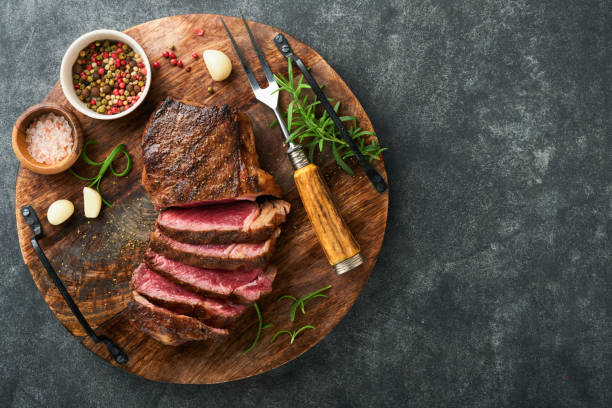

Home Page
The Best RIBEYE STEAK Recipe! 🥩

Ingerdients:
- 1 ribeye steak (2.5–4 cm thick is ideal)
- Salt (kosher or coarse sea salt)
- Freshly ground black pepper
- 1 tbsp neutral oil (canola / avocado oil)
- 2 tbsp butter
- 2–3 garlic cloves (crushed)
- 1–2 sprigs fresh rosemary or thyme (optional)
Insturctions:
-
Bring steak to room temp
Take the ribeye out of the fridge 30–45 minutes before cooking. This ensures even cooking.
-
Season generously
Pat the steak dry with paper towels. Season both sides very well with salt and black pepper.
-
Heat the pan
Use a heavy skillet (cast iron if possible.)
-
Heat on high for about 3–4 minutes until very hot.
-
Add the oil.
-
Sear
Place steak in the pan.
-
Sear 2–3 minutes per side until a deep brown crust forms.
-
Don’t move it during this time.
-
Butter baste
Lower heat to medium.
Add butter, garlic and herbs.
Tilt the pan and spoon melted butter over the steak for 1–2 minutes.
-
Check doneness (internal temperature)
- Rare: 50–52°C
- Medium-rare (recommended): 54–57°C
- Medium: 60–63°C
- Well-done: 68°C+
-
Rest
Remove steak and let it rest 5–10 minutes before slicing.